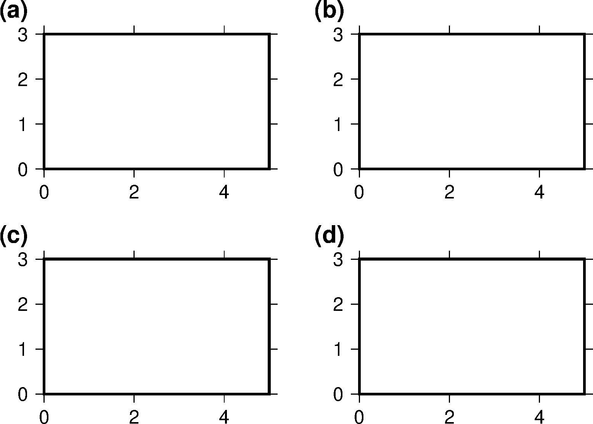

14.13 多子图¶
绘制多子图与绘制一张图没有本质区别，只是需要通过 -X 和 -Y 选项 移动每张子图的原点位置即可。同时，在绘制多子图时，通常还需要在每张子图的左上角加上
(a) 等子图编号，这可以通过 pstext 来实现。
下面的命令展示了如何绘制四个子图，并给每个子图进行编号。需要注意，绘图时通常从左下角开始画起，因而这里绘制子图的顺序是 c => d => a => b。
#!/bin/bash
J=X5c/3c
R=0/5/0/3
PS=subplot.ps
gmt psxy -J$J -R$R -T -K > $PS
# 绘制子图 c
gmt psbasemap -J$J -R$R -Ba -BWSen -K -O >> $PS
# 此处可以放置一堆子图A内的绘制命令
# 给子图编号
echo "(c)" | gmt pstext -J$J -R$R -F+cTL+f15p,1 -Dj-1c/-0.75c -N -K -O >> $PS
# 绘制子图 d 并编号
gmt psbasemap -J$J -R$R -Ba -BWSen -K -O -X7c >> $PS
echo "(d)" | gmt pstext -J$J -R$R -F+cTL+f15p,1 -Dj-1c/-0.75c -N -K -O >> $PS
# 绘制子图 a 并编号
gmt psbasemap -J$J -R$R -Ba -BWSen -K -O -X-7c -Y5c >> $PS
echo "(a)" | gmt pstext -J$J -R$R -F+cTL+f15p,1 -Dj-1c/-0.75c -N -K -O >> $PS
# 绘制子图 b 并编号
gmt psbasemap -J$J -R$R -Ba -BWSen -K -O -X7c >> $PS
echo "(b)" | gmt pstext -J$J -R$R -F+cTL+f15p,1 -Dj-1c/-0.75c -N -K -O >> $PS
gmt psxy -J$J -R$R -T -O >> $PS

几点说明: